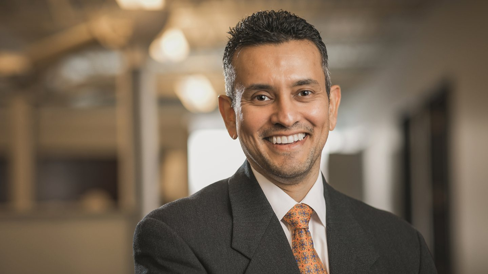
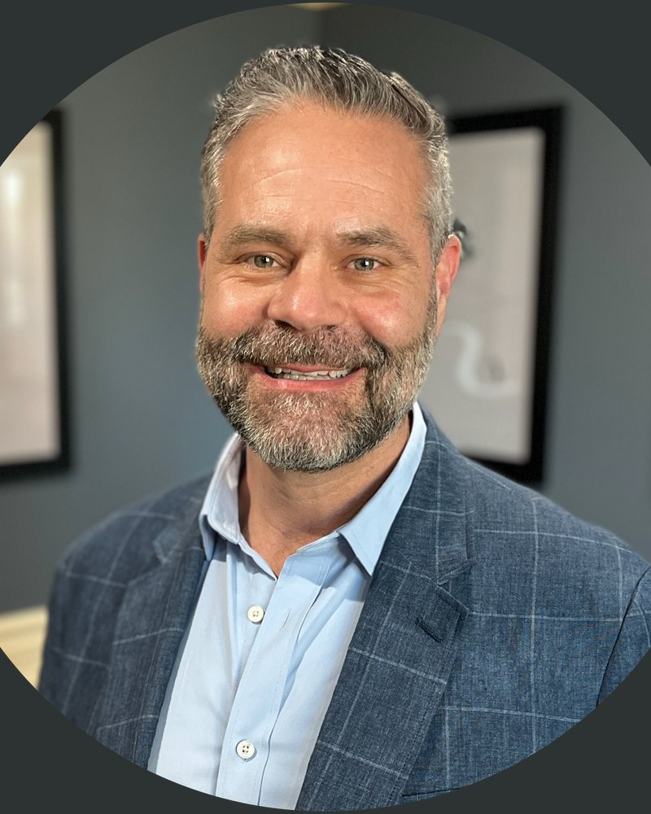
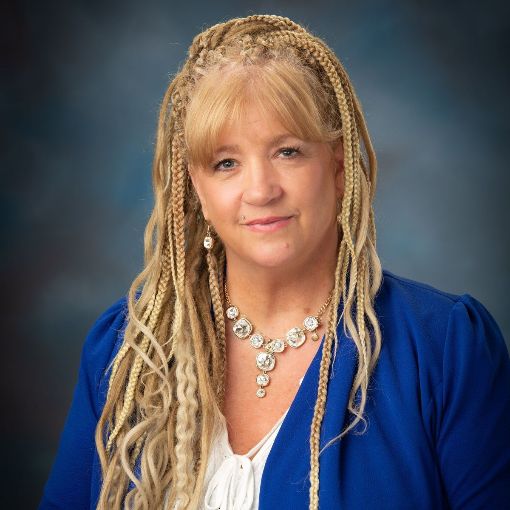

Reframe
Look again at the assumptions shaping a problem and make room for perspectives that were previously missing.
Same hands, different tools.
October 10, 2026 · 11:00 a.m.–4:00 p.m. Eastern time
Twelve speakers, live performances, and one public afternoon built around the ideas communities need when familiar methods no longer fit.
OU Pavilion
464 Golf View Lane, Rochester, Michigan 48309
Spencer Park, Rochester Hills • Photo: Olson.Sarah / CC BY-SA 4.0
Free registration is open
Join us October 10 at the OU Pavilion. In-person attendance is free and limited to 100 guests.
Look again at the assumptions shaping a problem and make room for perspectives that were previously missing.
Turn insight into new practices, systems, and relationships that are more resilient than what came before.
Adapt together by sharing knowledge, widening participation, and remembering that change is experienced locally.
Explore the venue area, open turn-by-turn directions, or review the parking and shuttle guide before the event.
Ordered by last name.

Change Begins Twice: The Human Work of Storytelling
What Eggs Teach Us About Evidence
Inclusive art, disability, and community possibility.
The Last Tool We Need to Retool Is Ourselves

Why Exactly Are We All Here?

The Sculptor Returns
Cybersecurity, secure systems, and connected devices.
Explainable artificial intelligence and health decisions.

Recovery, accountability, and rebuilding lasting stability.

Prevention, resilience, and trauma-informed community care.
Smaller AI, Bigger Reach
TEDx is a program of local, independently organized events that combine live speakers and TED Talk videos to spark discussion and connection. TED provides general guidance and a shared framework, while each local team independently curates and produces its own event.
TEDxAuburnHills is a licensed, volunteer-led event. It is public, in person, and limited to 100 attendees, with a free livestream available for the online audience.
Admission is free, registration is open, and seating is limited to 100 in-person guests at the OU Pavilion.
Sign up nowThe event will be livestreamed free for the online audience.
Livestream detailsSupport accessibility, production, hospitality, and outreach while the program remains independently curated.
Sponsorship detailsSee the volunteer team shaping the speakers, production, partnerships, and audience experience.
Meet the organizersFind out how every member of our community can adopt new tools to thrive, with curated speakers across AI, medicine, cybersecurity, art, neuroscience, history, recreation, and more.
Retooling begins with a simple recognition: the people doing the work may remain the same even when the methods around them must change. Our tools can be physical, technical, social, or cultural. They include the habits, systems, and stories we rely on every day.
On October 10, TEDxAuburnHills will bring together voices from across disciplines to examine what deserves to be kept, what needs to be rebuilt, and what communities can create next.